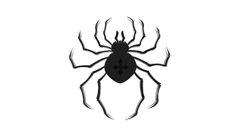
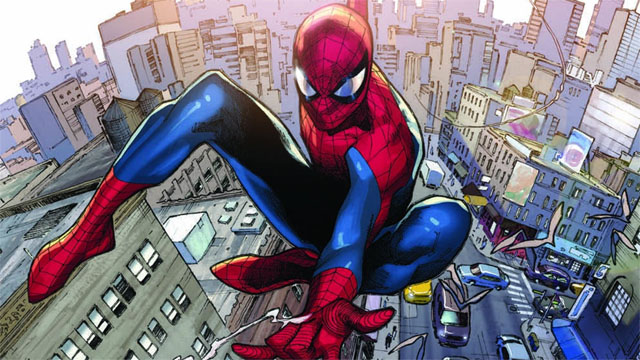

|  |
Spider-man The popular arachnid-based and justice-seeking vigilante.  |
|
|
Spider-Man's secret identity is Peter Parker, a teenage high school student and an orphan raised by his Aunt May and Uncle Ben in New York City after his parents Richard and Mary Parker died in a plane crash. Lee and Ditko had the character deal with the struggles of adolescence and financial issues and gave him many supporting characters, such as Flash Thompson, J. Jonah Jameson, and Harry Osborn; romantic interests Gwen Stacy, Mary Jane Watson, and the Black Cat; and his enemies such as the Green Goblin, Doctor Octopus, and Venom. In his origin story, Spider-Man gets his superhuman spider-powers and abilities after being bitten by a radioactive spider; these include superhuman strength, speed, agility, jump, reflexes, stamina, durability, coordination, and balance, clinging to surfaces and ceilings like a spider, and detecting danger with his precognition ability called "spider-sense". He also builds wrist-mounted "web-shooter" devices that shoot artificial spider-webs of his own design that were used for fighting his enemies and web-swinging across the city. Peter Parker originally used his powers for his own personal gain, but after his Uncle Ben was killed by a thief that Peter did not stop, Peter began to use his spider-powers to fight crime by becoming the superhero known as Spider-Man. |
Summary Biography Powers Alternate Versions of Spider-man |